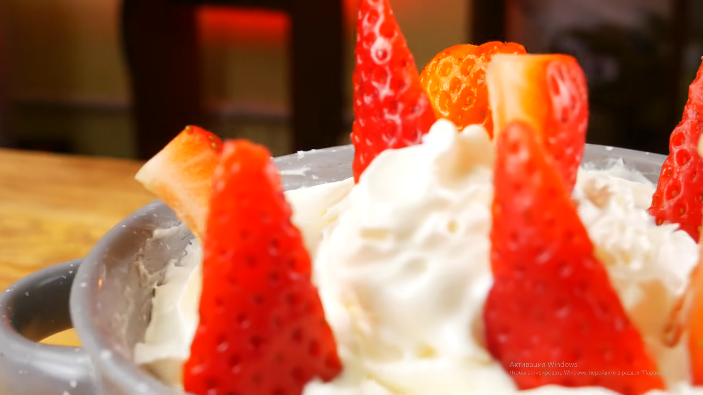
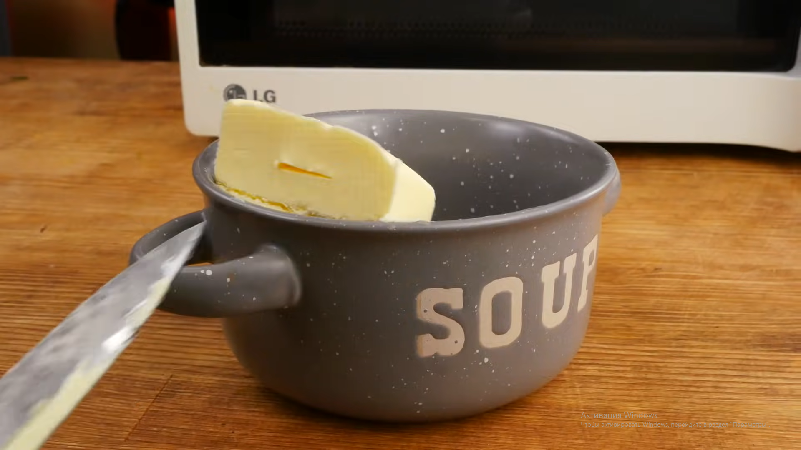
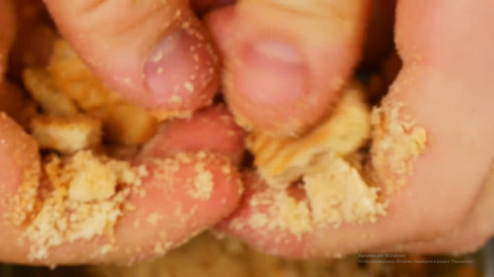
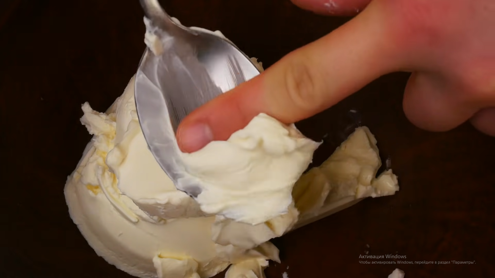
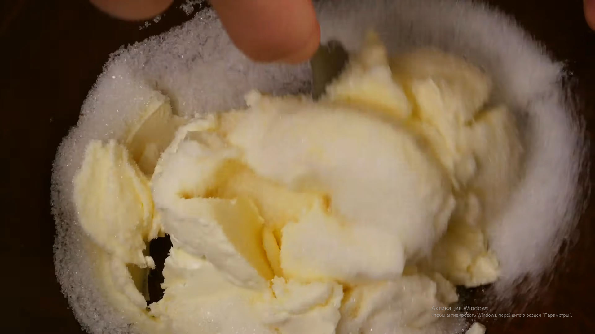
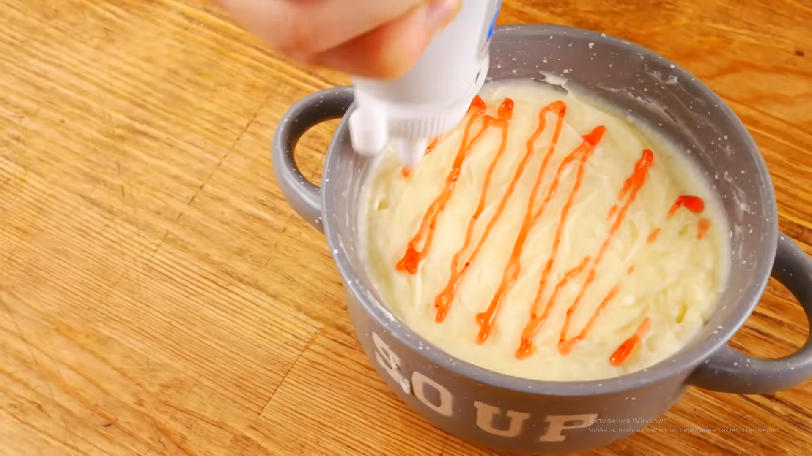
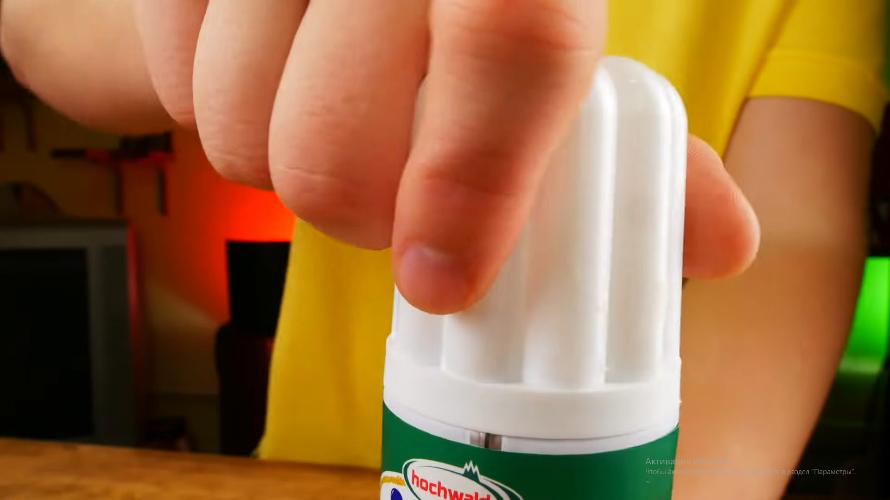
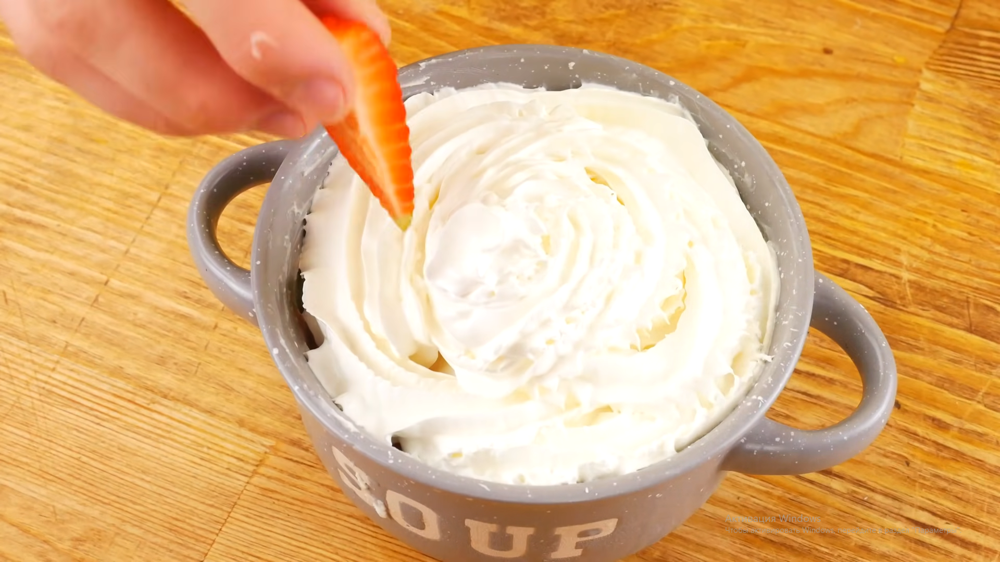

Чизкейк в микроволновке
Хорошего дня! Сегодня я вам покажу как приготовить чизкейк в микроволновке.

Для рецепта нам понадобится:
10 грам масла
печенье
Сливочный сыр (похожий на филадельфию)
сахар
сливки
клубничный допинг
клубника
Берём 10 грам масла и перекладываем в тарелку

Отправляем в микроволновку на 1 минуту чтобы масло растопилось
крошим печенье в масло, затем перемешиваем и выравниваем
ложкой

Затем берём наш сыр и выкладываем его в миску

Сахарим наш сыр

Перекладываем эту массу к печенью
Отпрaвляем это в микроволновку на 4 минуты, после чего на час в морозилку
Затем открываем клубничный допинг и поливаем им наше блюдо

делаем шапку из взбитых сливок

Украшем нашу шапку клубникой или другими фруктами
